This function generates various types of plots for enrichment (over-representation) analysis.
EnrichmentPlot(
srt,
db = "GO_BP",
group_by = NULL,
test.use = "wilcox",
res = NULL,
plot_type = c("bar", "dot", "lollipop", "network", "enrichmap", "wordcloud",
"comparison"),
split_by = c("Database", "Groups"),
color_by = "Database",
group_use = NULL,
id_use = NULL,
pvalueCutoff = NULL,
padjustCutoff = 0.05,
topTerm = ifelse(plot_type == "enrichmap", 100, 6),
compare_only_sig = FALSE,
topWord = 100,
word_type = c("term", "feature"),
word_size = c(2, 8),
words_excluded = NULL,
network_layout = "fr",
network_labelsize = 5,
network_blendmode = "blend",
network_layoutadjust = TRUE,
network_adjscale = 60,
network_adjiter = 100,
enrichmap_layout = "fr",
enrichmap_cluster = "fast_greedy",
enrichmap_label = c("term", "feature"),
enrichmap_labelsize = 5,
enrlichmap_nlabel = 4,
enrichmap_show_keyword = FALSE,
enrichmap_mark = c("ellipse", "hull"),
enrichmap_expand = c(0.5, 0.5),
character_width = 50,
lineheight = 0.5,
palette = "Spectral",
palcolor = NULL,
aspect.ratio = 1,
legend.position = "right",
legend.direction = "vertical",
theme_use = "theme_scop",
theme_args = list(),
combine = TRUE,
nrow = NULL,
ncol = NULL,
byrow = TRUE,
seed = 11
)A Seurat object containing the results of RunDEtest and RunEnrichment.
If specified, enrichment results will be extracted from the Seurat object automatically.
If not specified, the res arguments must be provided.
The database to use for enrichment plot. Default is "GO_BP".
A character vector specifying the grouping variable in the Seurat object. This argument is only used if srt is specified.
A character vector specifying the test to be used in differential expression analysis. This argument is only used if srt is specified.
Enrichment results generated by RunEnrichment function. If provided, 'srt', 'test.use' and 'group_by' are ignored.
The type of plot to generate. Options are: "bar", "dot", "lollipop", "network", "enrichmap", "wordcloud", "comparison". Default is "bar".
The splitting variable(s) for the plot. Can be "Database", "Groups", or both. Default is c("Database", "Groups") for plots.
The variable used for coloring. Default is "Database".
The group(s) to be used for enrichment plot. Default is NULL.
List of IDs to be used to display specific terms in the enrichment plot. Default value is NULL.
The p-value cutoff. Default is NULL. Only work when padjustCutoff is NULL.
The p-adjusted cutoff. Default is 0.05.
The number of top terms to display. Default is 6, or 100 if 'plot_type' is "enrichmap".
Whether to compare only significant terms. Default is FALSE.
The number of top words to display for wordcloud. Default is 100.
The type of words to display in wordcloud. Options are "term" and "feature". Default is "term".
The size range for words in wordcloud. Default is c(2, 8).
Words to be excluded from the wordcloud. The default value is NULL, which means that the built-in words (scop::words_excluded) will be used.
The layout algorithm to use for network plot. Options are "fr", "kk","random", "circle", "tree", "grid", or other algorithm from 'igraph' package. Default is "fr".
The label size for network plot. Default is 5.
The blend mode for network plot. Default is "blend".
Whether to adjust the layout of the network plot to avoid overlapping words. Default is TRUE.
The scale for adjusting network plot layout. Default is 60.
The number of iterations for adjusting network plot layout. Default is 100.
The layout algorithm to use for enrichmap plot. Options are "fr", "kk","random", "circle", "tree", "grid", or other algorithm from 'igraph' package. Default is "fr".
The clustering algorithm to use for enrichmap plot. Options are "walktrap", "fast_greedy", or other algorithm from 'igraph' package. Default is "fast_greedy".
The label type for enrichmap plot. Options are "term" and "feature". Default is "term".
The label size for enrichmap plot. Default is 5.
The number of labels to display for each cluster in enrichmap plot. Default is 4.
Whether to show the keyword of terms or features in enrichmap plot. Default is FALSE.
The mark shape for enrichmap plot. Options are "ellipse" and "hull". Default is "ellipse".
The expansion factor for enrichmap plot. Default is c(0.5, 0.5).
The maximum width of character of descriptions. Default is 50.
The line height for y-axis labels. Default is 0.5.
The color palette to use. Default is "Spectral".
Custom colors for palette. Default is NULL.
The aspect ratio of the plot. Default is 1.
The position of the legend. Default is "right".
The direction of the legend. Default is "vertical".
The theme to use for the plot. Default is "theme_scop".
The arguments to pass to the theme. Default is an empty list.
Whether to combine multiple plots into a single plot. Default is TRUE.
The number of rows in the combined plot. Default is NULL, calculated based on the number of plots.
The number of columns in the combined plot. Default is NULL, calculated based on the number of plots.
Whether to fill the combined plot by row. Default is TRUE.
The random seed to use. Default is 11.
data("pancreas_sub")
pancreas_sub <- RunDEtest(pancreas_sub, group_by = "CellType")
#> Warning: Data in the 'data' slot is raw counts. Perform NormalizeData(LogNormalize) on the data.
#> [2024-11-18 15:15:36.420849] Start DEtest
#> Workers: 10
#> Find all markers(wilcox) among 5 groups...
#>
|
| | 0%
#>
#>
|
|====================== | 20%
#>
#>
|
|============================================ | 40%
#>
#>
|
|================================================================== | 60%
#>
#>
|
|======================================================================================== | 80%
#>
#>
|
|==============================================================================================================| 100%
#>
#> [2024-11-18 15:15:38.88656] DEtest done
#> Elapsed time:2.47 secs
pancreas_sub <- RunEnrichment(srt = pancreas_sub, db = c("GO_BP", "GO_CC"), group_by = "CellType", species = "Mus_musculus")
#> [2024-11-18 15:15:38.888879] Start Enrichment
#> Workers: 10
#> Species: Mus_musculus
#> Loading cached db: GO_BP version:3.18.0 nterm:15848 created:2024-11-18 14:32:38.567153
#> Loading cached db: GO_CC version:3.18.0 nterm:1990 created:2024-11-18 14:33:02.497315
#> Permform enrichment...
#>
|
| | 0%
|
|=========== | 10%
|
|====================== | 20%
|
|================================= | 30%
|
|============================================ | 40%
|
|======================================================= | 50%
|
|================================================================== | 60%
|
|============================================================================= | 70%
|
|======================================================================================== | 80%
|
|=================================================================================================== | 90%
|
|==============================================================================================================| 100%
#>
#> [2024-11-18 15:15:53.244912] Enrichment done
#> Elapsed time:14.36 secs
EnrichmentPlot(pancreas_sub, db = "GO_BP", group_by = "CellType", group_use = "Ductal", plot_type = "bar")
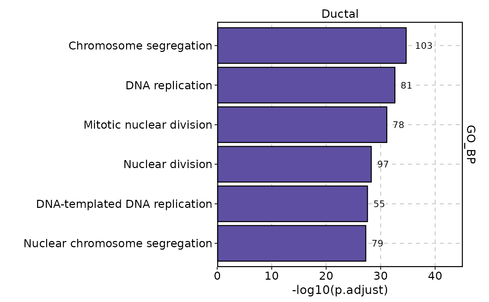
EnrichmentPlot(pancreas_sub,
db = "GO_BP", group_by = "CellType", group_use = "Endocrine",
plot_type = "bar", character_width = 30,
theme_use = ggplot2::theme_classic, theme_args = list(base_size = 10)
)
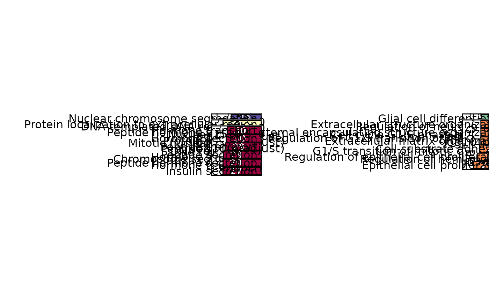
EnrichmentPlot(pancreas_sub, db = "GO_BP", group_by = "CellType", plot_type = "bar", color_by = "Groups", ncol = 2)
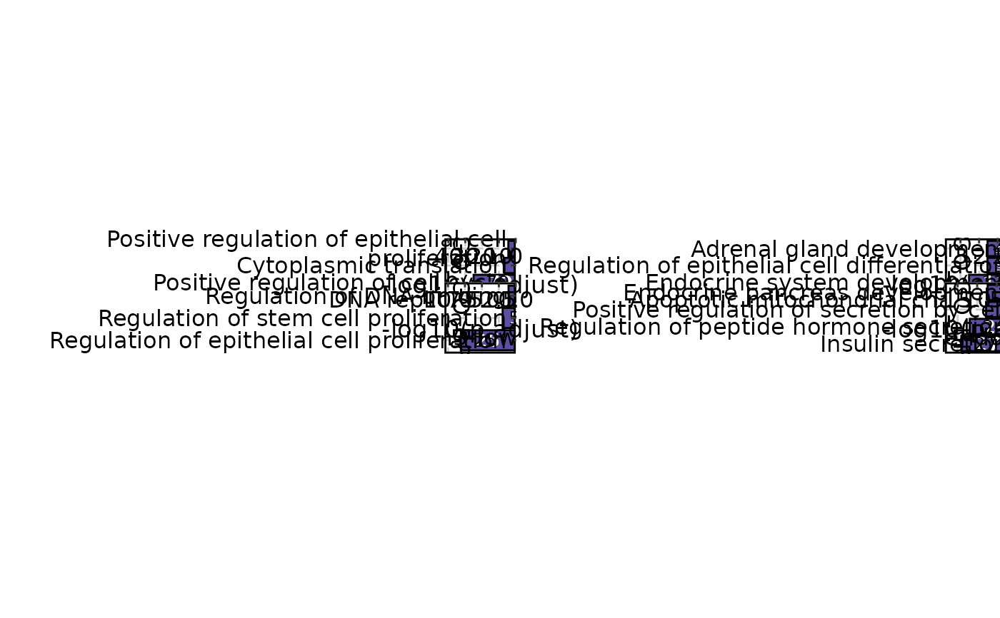
EnrichmentPlot(pancreas_sub,
db = "GO_BP", group_by = "CellType", plot_type = "bar",
split_by = "Database", color_by = "Groups", palette = "Set1",
id_use = list(
"Ductal" = c("GO:0002181", "GO:0045787", "GO:0006260", "GO:0050679"),
"Ngn3 low EP" = c("GO:0050678", "GO:0051101", "GO:0072091", "GO:0006631"),
"Ngn3 high EP" = c("GO:0035270", "GO:0030325", "GO:0008637", "GO:0030856"),
"Pre-endocrine" = c("GO:0090276", "GO:0031018", "GO:0030073", "GO:1903532"),
"Endocrine" = c("GO:0009914", "GO:0030073", "GO:0009743", "GO:0042593")
)
)
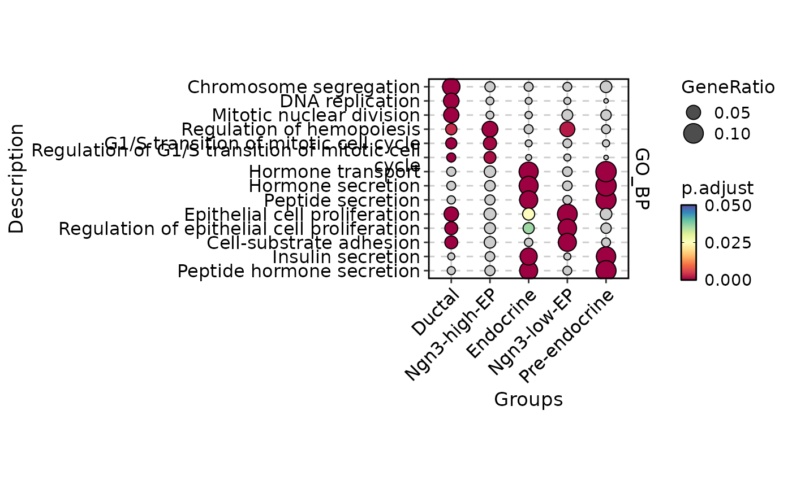
EnrichmentPlot(pancreas_sub, db = "GO_BP", group_by = "CellType", topTerm = 3, plot_type = "comparison")
#> Warning: Vectorized input to `element_text()` is not officially supported.
#> ℹ Results may be unexpected or may change in future versions of ggplot2.
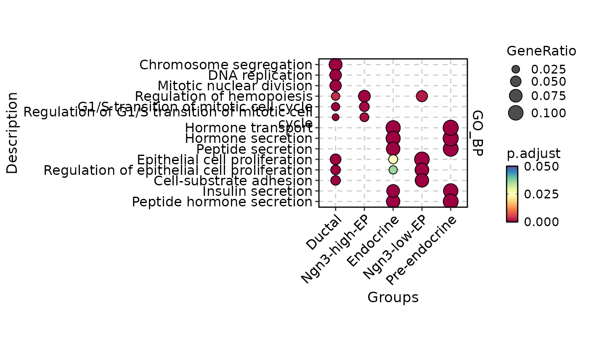
EnrichmentPlot(pancreas_sub, db = "GO_BP", group_by = "CellType", topTerm = 3, plot_type = "comparison", compare_only_sig = TRUE)
#> Warning: Vectorized input to `element_text()` is not officially supported.
#> ℹ Results may be unexpected or may change in future versions of ggplot2.
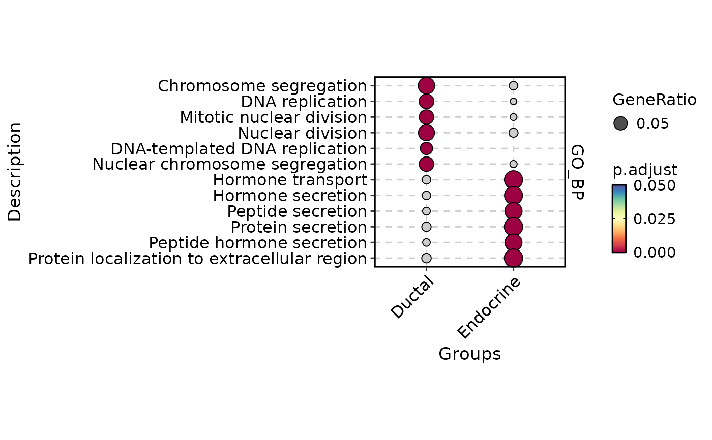
EnrichmentPlot(pancreas_sub, db = "GO_BP", group_by = "CellType", group_use = c("Ductal", "Endocrine"), plot_type = "comparison")
#> Warning: Vectorized input to `element_text()` is not officially supported.
#> ℹ Results may be unexpected or may change in future versions of ggplot2.
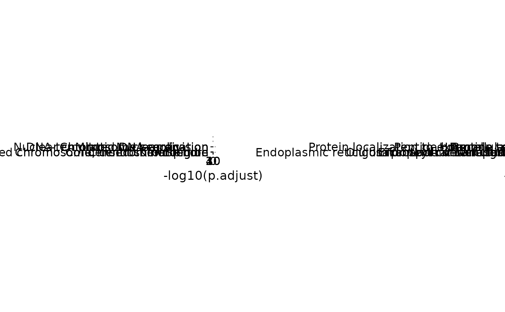
EnrichmentPlot(pancreas_sub,
db = c("GO_BP", "GO_CC"), group_by = "CellType", group_use = c("Ductal", "Endocrine"), plot_type = "bar",
split_by = "Groups"
)
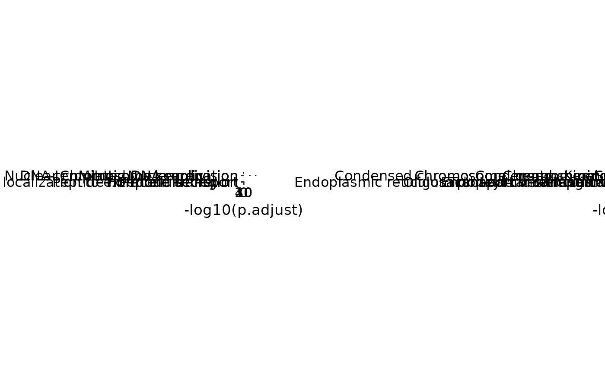
EnrichmentPlot(pancreas_sub,
db = c("GO_BP", "GO_CC"), group_by = "CellType", group_use = c("Ductal", "Endocrine"), plot_type = "bar",
split_by = "Database", color_by = "Groups",
)
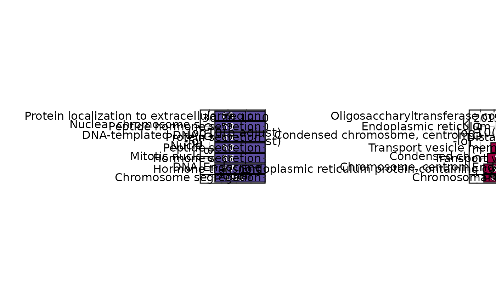
EnrichmentPlot(pancreas_sub,
db = c("GO_BP", "GO_CC"), group_by = "CellType", group_use = c("Ductal", "Endocrine"), plot_type = "bar",
split_by = c("Database", "Groups")
)
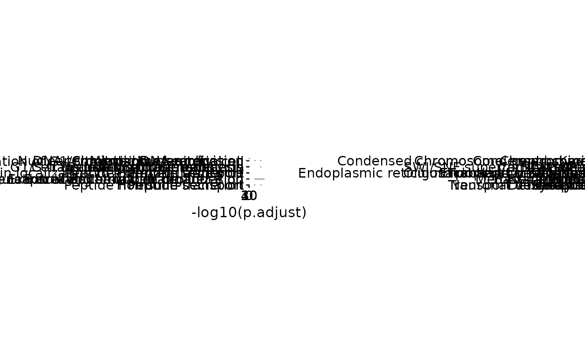
EnrichmentPlot(pancreas_sub,
db = c("GO_BP", "GO_CC"), group_by = "CellType", group_use = c("Ductal", "Endocrine"), plot_type = "bar",
split_by = c("Groups", "Database")
)
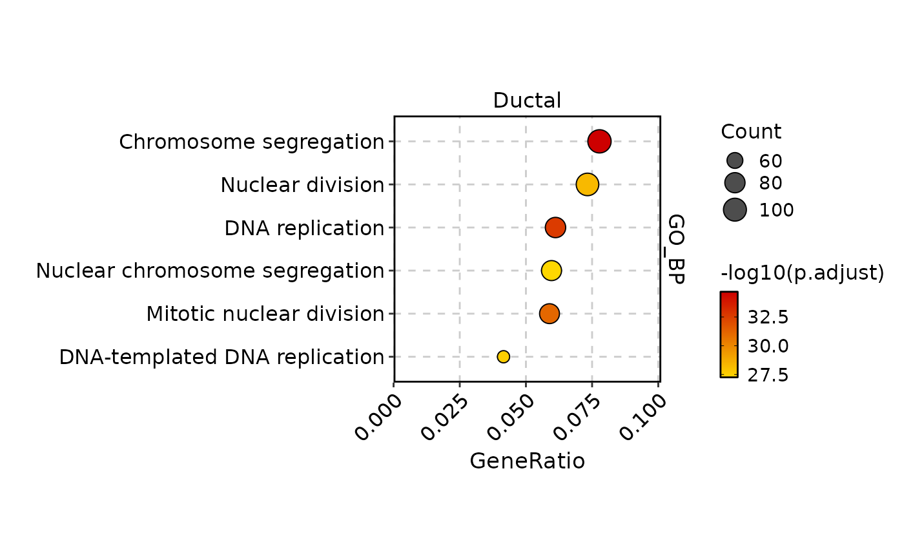
EnrichmentPlot(pancreas_sub,
db = c("GO_BP", "GO_CC"), group_by = "CellType", plot_type = "bar",
split_by = "Database", color_by = "Groups", palette = "Set1"
)
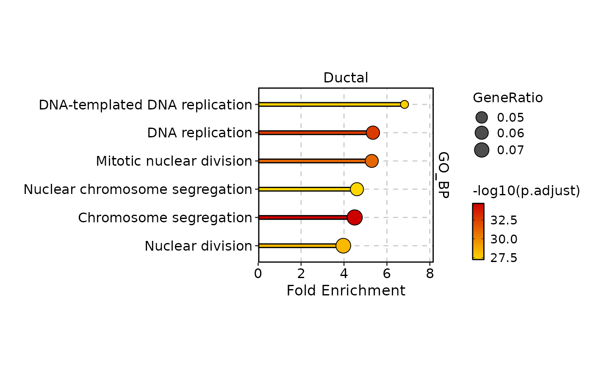
EnrichmentPlot(pancreas_sub, db = "GO_BP", group_by = "CellType", group_use = "Ductal", plot_type = "dot", palette = "GdRd")
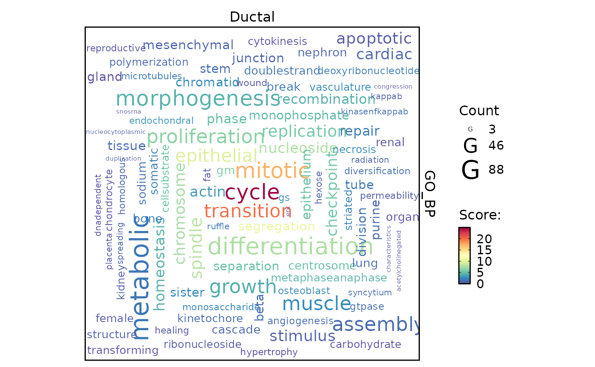
EnrichmentPlot(pancreas_sub, db = "GO_BP", group_by = "CellType", group_use = "Ductal", plot_type = "lollipop", palette = "GdRd")
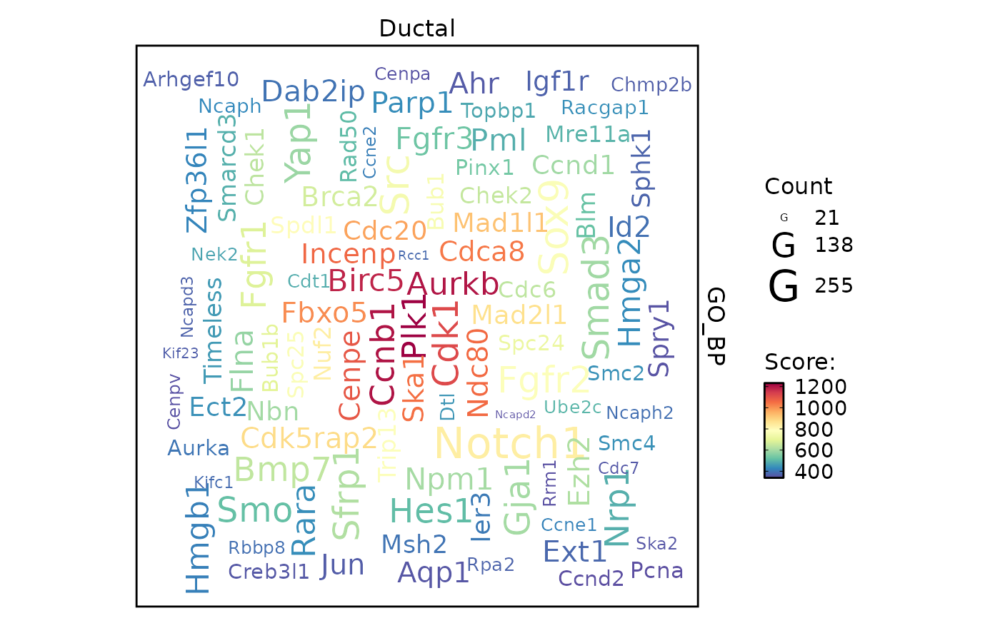
EnrichmentPlot(pancreas_sub, db = "GO_BP", group_by = "CellType", group_use = "Ductal", plot_type = "wordcloud")
#> Install package: "ggwordcloud" ...
#> 'getOption("repos")' replaces Bioconductor standard repositories, see 'help("repositories", package = "BiocManager")'
#> for details.
#> Replacement repositories:
#> CRAN: https://cloud.r-project.org
#> Bioconductor version 3.18 (BiocManager 1.30.23), R 4.3.2 (2023-10-31)
#> Installing package(s) 'ggwordcloud'
#> also installing the dependency ‘gridtext’
#>
#> The downloaded binary packages are in
#> /var/folders/rv/3jnfbs0d6r7d0c5bfj7ft5k00000gn/T//RtmpAC8Cie/downloaded_packages
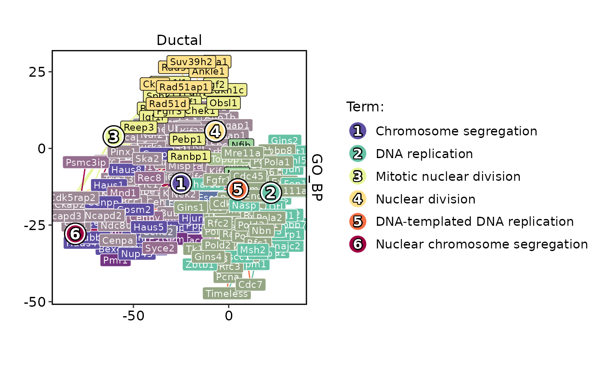
EnrichmentPlot(pancreas_sub, db = "GO_BP", group_by = "CellType", group_use = "Ductal", plot_type = "wordcloud", word_type = "feature")
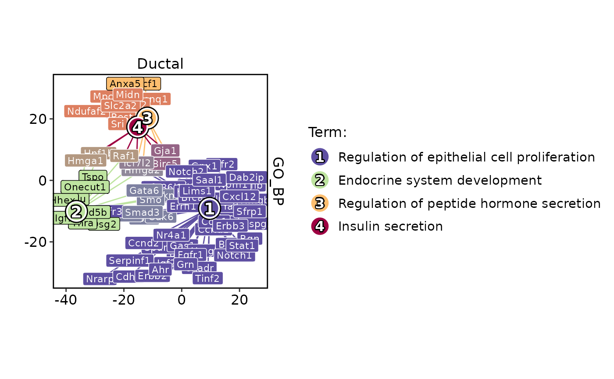
EnrichmentPlot(pancreas_sub, db = "GO_BP", group_by = "CellType", group_use = "Ductal", plot_type = "network")
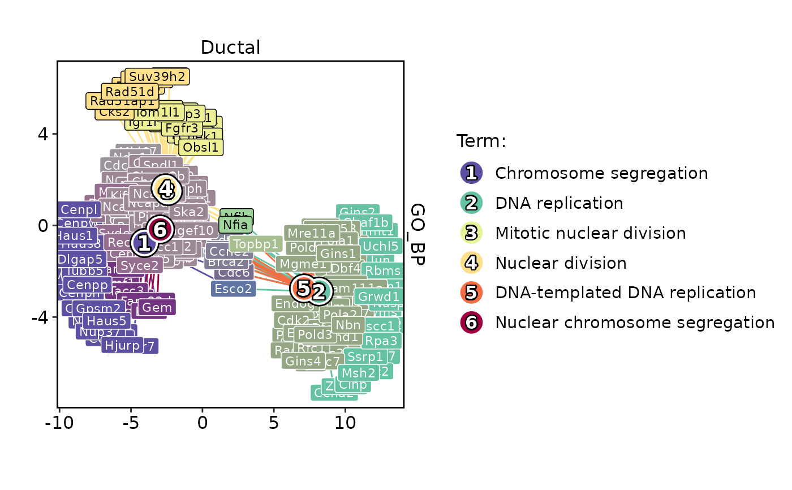
EnrichmentPlot(pancreas_sub, db = "GO_BP", group_by = "CellType", group_use = "Ductal", plot_type = "network", id_use = c("GO:0050678", "GO:0035270", "GO:0090276", "GO:0030073"))
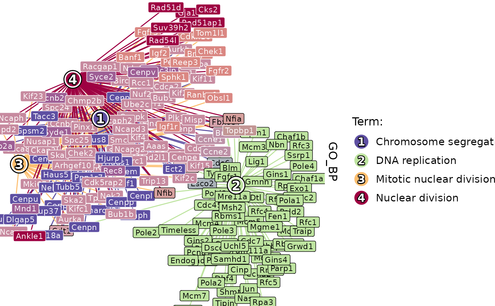
EnrichmentPlot(pancreas_sub, db = "GO_BP", group_by = "CellType", group_use = "Ductal", plot_type = "network", network_layoutadjust = FALSE)
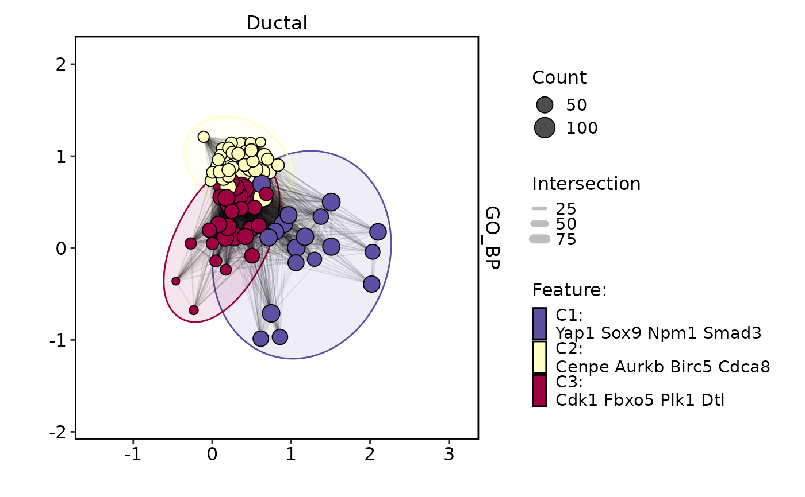
EnrichmentPlot(pancreas_sub,
db = "GO_BP", group_by = "CellType", group_use = "Ductal", plot_type = "network",
topTerm = 4, network_blendmode = "average",
theme_use = "theme_blank", theme_args = list(add_coord = FALSE)
) %>% panel_fix(height = 5)
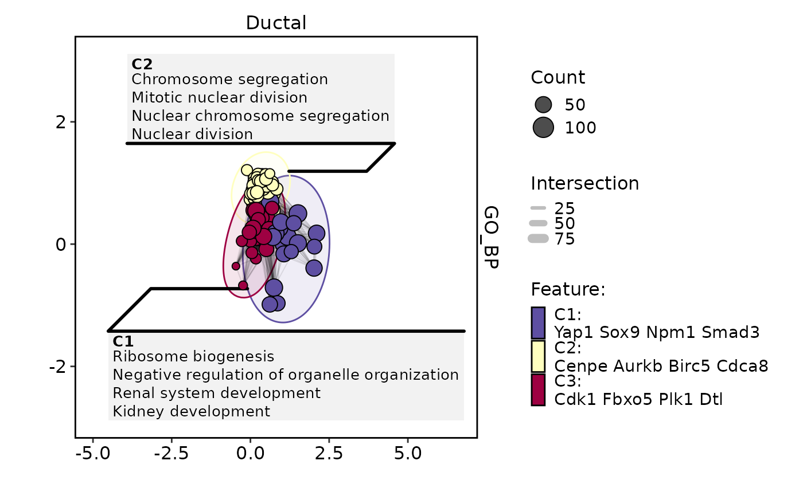
EnrichmentPlot(pancreas_sub, db = "GO_BP", group_by = "CellType", group_use = "Ductal", plot_type = "enrichmap")
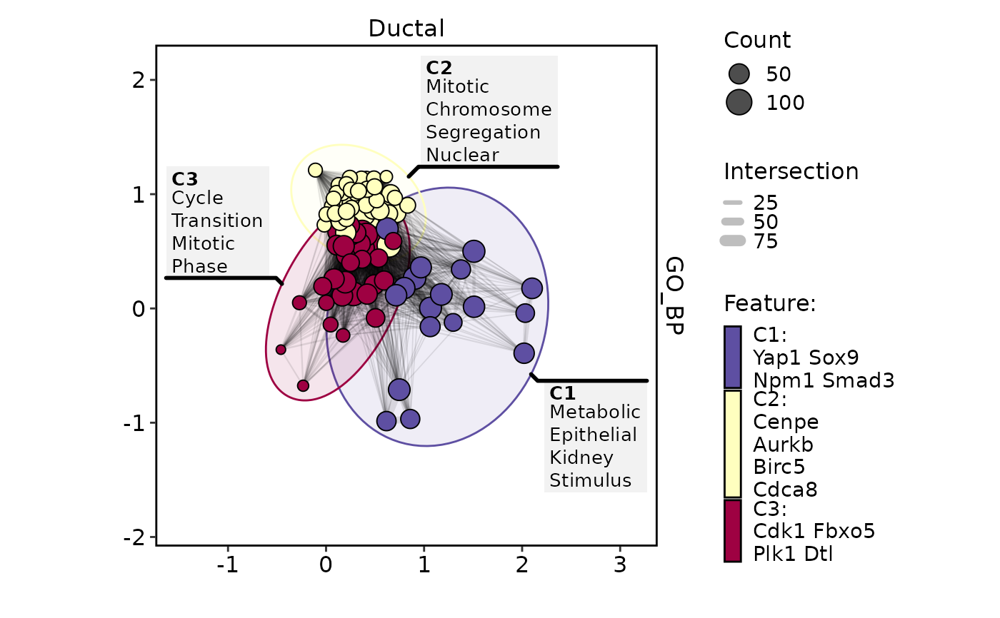
EnrichmentPlot(pancreas_sub, db = "GO_BP", group_by = "CellType", group_use = "Ductal", plot_type = "enrichmap", enrichmap_expand = c(2, 1))
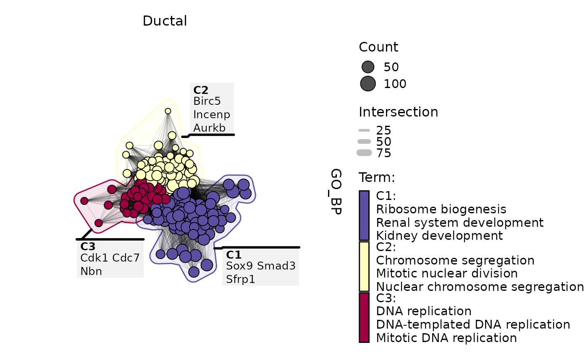
EnrichmentPlot(pancreas_sub,
db = "GO_BP", group_by = "CellType", group_use = "Ductal", plot_type = "enrichmap",
enrichmap_show_keyword = TRUE, character_width = 10
)
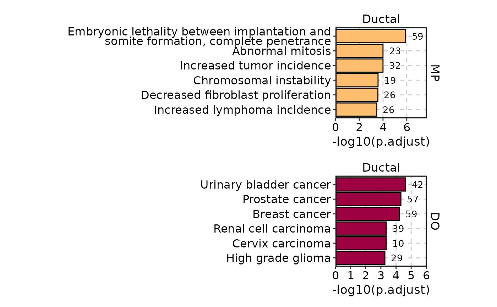
EnrichmentPlot(pancreas_sub,
db = "GO_BP", group_by = "CellType", group_use = "Ductal", plot_type = "enrichmap",
topTerm = 200, enrichmap_mark = "hull", enrichmap_label = "feature", enrlichmap_nlabel = 3, character_width = 10,
theme_use = "theme_blank", theme_args = list(add_coord = FALSE)
) %>% panel_fix(height = 4)
#> Install package: "concaveman" ...
#> 'getOption("repos")' replaces Bioconductor standard repositories, see 'help("repositories", package = "BiocManager")'
#> for details.
#> Replacement repositories:
#> CRAN: https://cloud.r-project.org
#> Bioconductor version 3.18 (BiocManager 1.30.23), R 4.3.2 (2023-10-31)
#> Installing package(s) 'concaveman'
#>
#> The downloaded binary packages are in
#> /var/folders/rv/3jnfbs0d6r7d0c5bfj7ft5k00000gn/T//RtmpAC8Cie/downloaded_packages
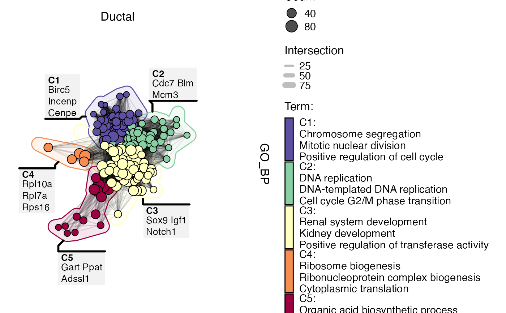
pancreas_sub <- RunEnrichment(srt = pancreas_sub, db = c("MP", "DO"), group_by = "CellType", convert_species = TRUE, species = "Mus_musculus")
#> [2024-11-18 15:16:36.621933] Start Enrichment
#> Workers: 10
#> Species: Mus_musculus
#> Loading cached db: MP version:2024-11-11 08:01 nterm:10556 created:2024-11-18 14:34:33.845388
#> Loading cached db: DO version:7.4.0 nterm:6246 created:2024-11-18 14:34:41.181744
#> Permform enrichment...
#>
|
| | 0%
|
|=========== | 10%
|
|====================== | 20%
|
|================================= | 30%
|
|============================================ | 40%
|
|======================================================= | 50%
|
|================================================================== | 60%
|
|============================================================================= | 70%
|
|======================================================================================== | 80%
|
|=================================================================================================== | 90%
|
|==============================================================================================================| 100%
#>
#> [2024-11-18 15:16:41.190146] Enrichment done
#> Elapsed time:4.57 secs
EnrichmentPlot(pancreas_sub, db = c("MP", "DO"), group_by = "CellType", group_use = "Endocrine", ncol = 1)
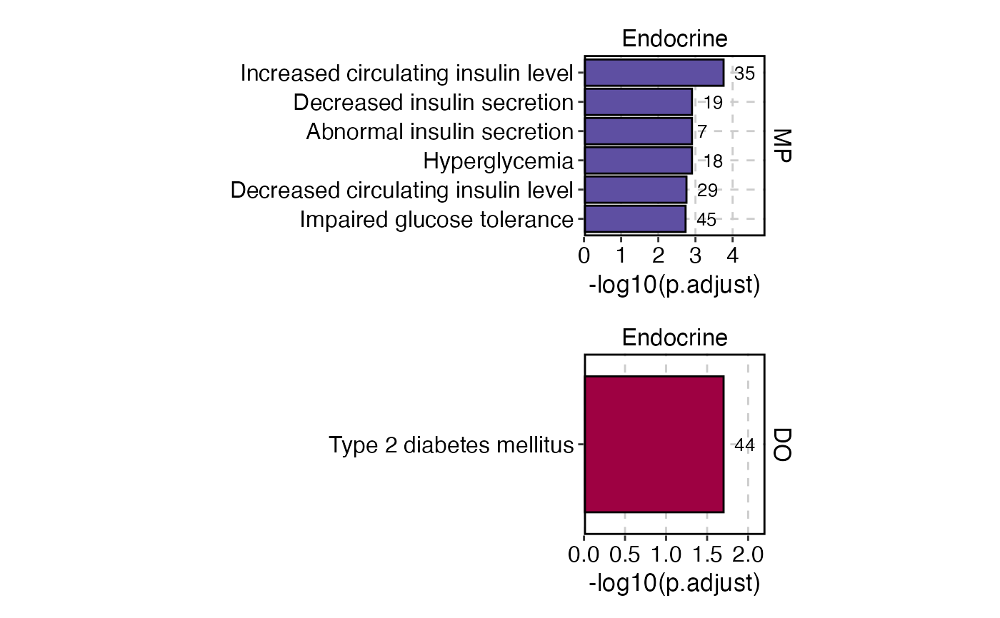